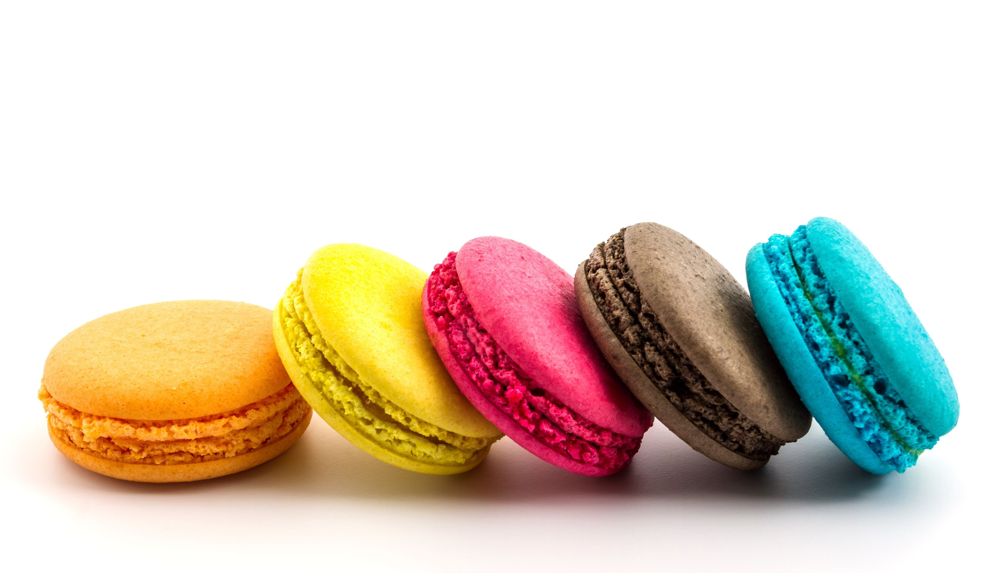

BONBON
FRENCH MACARONS & GOURMET COOKIES
Freshly Baked Macarons Delivered Nationwide
Treat Yourself or someone you love with some macarons!
Limited Edition Cereal

These Cereal Milk Macarons have a Vainilla Bean Macaron shell, and then are filled with Cereal Milk Buttercream. There are three flavour options of cereal milk macarons - Trix, Lucky Charms and Fruitty Pebbles. These taste just like a bowl of your favourite cereal.
Meet Our New S'mores Macarons

These super-fun s'mores macarons bring together the flavors of toasted marshmallow, graham crackers, and a creamy dark chocolate ganache. This macaron recipe looks impressive and is absolutely delicious.